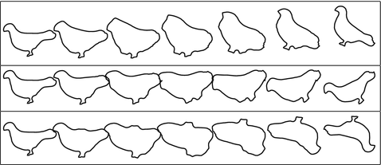
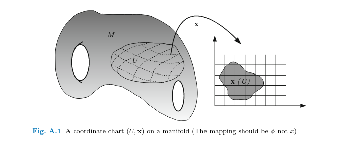
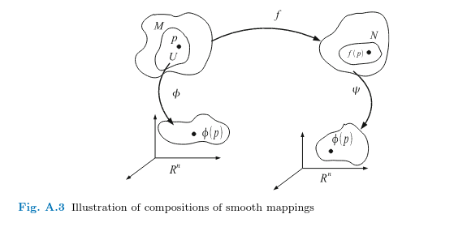
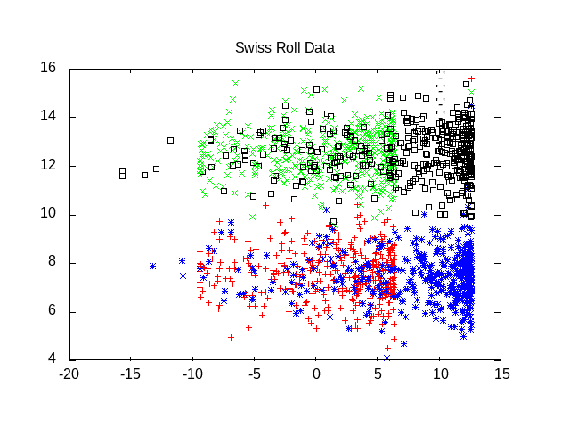
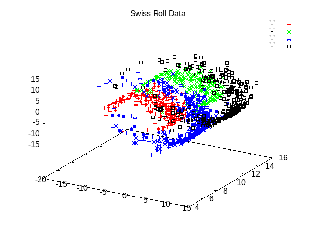
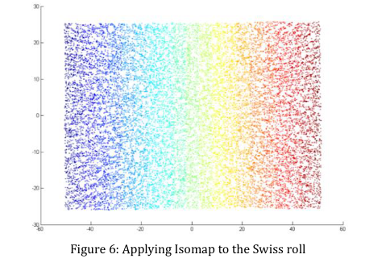

Geometry Manifold Day
1. Discussion Questions Geometry disc_ques_purpose
The purpose for these discussion questions is to get people thinking of concretely measuring abstract entities.
:end:
- Can we measure ideas?
- What is the shortest path between an image of a fish and an image of a man?
- What is the shape of the semantic neighborhood of political conservatism?
- How do we transit from our current beliefs about the future starting only with our past observations?

Figure 1: A geodesic path between two bird shapes. Taken from: https://link.springer.com/book/10.1007/978-1-4939-4020-2
2. Some Motivating Ideas
- Algebra and Geometry - what are the differences?
- Which of the two is more relevant for brain and cognitive modelling?
3. Article Questions about [1]
- From the students
- From me
- Explain untangling.
- Explain why a neural manifold may or may not be a manifold?
4. What is a manifold?
A manifold is a "thingie" that can be as weird as you want it to be, but that is locally like \(\mathbb{R}^n\). Let's examine what that statement means and some of the terminology those who talk about it like to use. In what follows I try to provide a sketch of a lot of the terminology that shows up and also some of the logic behind the ideas of what the utility is of a manifold.
First up, what is \(\mathbb{R}^n\)?
4.1. Manifold Vocabulary
4.1.1. Points
You can follow your intuition here. A point is a thing. An object. A word. The atom of your domain of interest. It is a recognizable separate element of the space you are interested in. You may represent it by coordinate values \((x_1, x_2 ... x_n)\) or you could think of it as a vector. There are other ways to conceive of this too.
4.1.2. Sets
For us, in this context, a set is just a collection of points.
4.1.3. Open Sets
A set is open if it's complement is closed. This may strike you as being underspecified, but it is really just very general and allows us a lot of freedom to create the criteria by which openess of our sets will be judged. Often, it is useful to have the intuition that it is a set with no sharp edges. If you have a metric on your space then you can define the open sets via a notion that all the points in your set have some small \(\epsilon\) (measured by your distance metric) that is also in the set. There is no hard border that you can come up against.
4.1.4. Topology
For a given set \(X\) a topology is a collection of subsets of \(X\) that are all open and that together (via unions) will include all the points you have in the set \(X\) 1.
4.1.5. Topological Spaces
The tuple of the set \(X\) and the collection of open subsets that comprise the topology is the topological space. Usually these are not unique for a set \(X\).
4.1.6. Homeomorphisms
To come to grips with the mathematical ideas it often helps to start small. Think of two or three dimensions where you can sketch a diagram, but also realize that as you scale up especially to very big or even infinite dimensions things may break your intuition.
With a homeomorphism you jump from your "real" space into the flat map of \(\mathbb{R}^n\). You move around and measure things there. Then you jump back to your tricky and maybe arbitrarily wrinkly space. Denote the map from your space to \(\mathbb{R}^n\) via \(\phi\).
What makes it a homeomorphism is that it is continuous and has an inverse. Oversimplified this means nearby points stay nearby without breaks. When you jump to \(\mathbb{R}^n\) and jump back you end up where you started.
4.1.7. Charts and Atlases

Figure 2: The Idea of a Chart for a Manifold
If you could walk around in your original space or \(\mathbb{R}^n\) without limit the problem would be simple. You would just figure out distances and paths as you do in the real world. The tools of the manifold are for the circumstance where you can't just do that. In many cases the map (\(\phi\)) from your space to \(\mathbb{R}^n\) only covers a small area around your starting point and a small area in \(\mathbb{R}^n\). The \(\phi\) is called a chart. We rely on the fact that there is more than one chart and that charts overlap. An example is to consider a \(\phi\) and \(\psi\) for sets \(U\) and \(V\) which are both in your space and which sets overlap. \(\phi\) and \(\psi\) are both homeomorphisms so we can have the compositions of these functions with the inverse of the other in both orders: \(\psi^{-1}\circ\phi\) or \(\phi^{-1}\circ\psi\). For things to work out in a useful way we need these two things to be equal for all \(\{x \in U \cap V\}\)

Figure 3: Composing Charts to Measure a Manifold
Here is the idea informally, but with some of the mathematical notation: You start in your weird space at \(x\) and you want to measure the distance to \(y\) in your weird space. But your space is weird so there is no easy way to just measure a distance. What you do is use \(\phi\) to get into \(\mathbb{R}^n\) (you are now at \(\phi(x)\) measure the distance to \(\psi(y)\) there and then use \(\psi^{-1}(y)\) to get back to \(y\). That is your distance between \(x\) and \(y\) (denoted often as \(d(x,y)\)).
If you need to measure the space between an \(x\) and \(z\) that do not have intersecting charts you will need to use an atlas, which is the collection of all the charts. You then have to walk from one point to another chaining all the maps together.
4.1.8. Diffeomorphisms
For many of things we are interested in you may want other measures from \(\mathbb{R}^n\) that are more like speed or rates of change. We may therefore want more than just homeomorphisms. If we also want those maps to be differentiable so we can get "rates" then we want them to be things that we can take the derivatives of. Maybe many derivatives. So, we can require them to be infinitely differentiable (that is to have derivatives of all orders (\(C^\infty\))). If they are invertible (that is have inverses; we can get back to where we started; \(f \circ f^{-1} = \mbox{id}_{end} \mbox{ and } f^{-1} \circ f = \mbox{id}_{start}\).
4.1.9. Tangent Vectors
In high school we learned that slopes were rise over run. In calculus we learned to think of derivatives as slopes at a point along a curve. They were tangent: touching only at that one point. When that tangent "line" points in a multi-dimensional space we might choose to regard it as a vector and say it is a tangent vector. In summary, to find a tangent vector at a point in our weird space we fix a curve that travels through that point, use our tools for traveling to and from \(\mathbb{R}^n\) to get the tangent vector there, and label our original point with that tangent vector in the weird space. Of course, there might be a lot of ways to create a curve that passes through our point of interest. What do we do?
4.1.10. Equivalence Classes
We measure all of them. Many of the tangent vectors from these curves may be the same. We don't need to worry about them all since they are redundant in this respect. Thus we use equivalence classes. \(\[\gamma\]\) is the notation used for the collection of things (in our particular case here it is curves) that give us back the same result (in our particular case here it is a tangent vector) when we do to them whatever it was we did to \(\gamma\).
4.1.11. Tangent Spaces
The collection of all the equivalence classes of tangent vectors at a point is the tangent space. If we have done everything right with setting up all our components, charts and so forth this tangent space will be a space of vectors, that it will be a vector space, which is its own mathematical thing with various rules and properties we might be able to exploit to interesting effects.
4.2. What Is Your Manifold? class_activity
Take some time to identify a domain of scientific interest to you and explain (in a sketchy, hand-waving way) how it could be treated as a manifold, and what you might hope to gain or learn by doing so.
5. Why Bother With Weird Spaces
(swiss-plot-all "swiss-roll-flat.png" *srd* T)

(swiss-plot-all "swiss-roll.png" *srd*)

5.1. What is Wrong With Principle Components Analysis (PCA)?

Figure 4: PCA and the Swiss Roll Data temp
5.2. What Works Better - one example "isomap"

Figure 5: Isomap and the PCA Data
6. ISOMAP homework
This module's project is to implement some pieces (or all) of the isomap procedure for capturing the low dimensional structure of a complicated shape. We will try to use the swiss roll data so you will first need to implement a way to generate those data.
There is a blog describing a python implementation, but the goal here is less about getting something to work than understanding the mappings and what they mean. As well, we want to come to grips with the idea of a manifold and the tools that would help analyze data that lie upon one. Also, we would like to think about the expressivity of a programming language for these sorts of relations.
The steps are (see Algorithm Wikipedia):
- Make the data.
- Find the nearest neighbors for each point. There are choices to be made here. What is a neighbor? What is near? How many neighbors?
- Then you do something like multidimensional scaling on the graph distances to recover the local structure.
6.1. Note bene
Keep it real. Remember our high level goals, and don't spend hours and hours tweaking something to work. If it doesn't work well. It doesn't work well. Don't worry if you don't finish, but do try to explore the things your programming language does well and see if there are elements that you can implement to emphasize the power features of your language.
7. Companion and Optional Readings
8. References
9. Code
9.1. Making the Swiss Roll Data
(ql:quickload "alexandria" :silent t) (ql:quickload "eazy-gnuplot" :silent t) (defpackage #:swiss-roll (:nicknames "swiss") (:use #:cl #:eazy-gnuplot)) (in-package :swiss-roll) (defun 2d-gaussian-random (&key (how-many 1) (m1 0.0) (m2 0.0) (sd1 1.0) (sd2 1.0)) (let ((out 'nil)) (dotimes (i how-many out) (multiple-value-bind (x y) (alexandria:gaussian-random) (setq out (cons (list (+ m1 (* sd1 x)) (+ m2 (* sd2 y))) out)))))) (defun swiss-roll-transform (x y) (list (* x (cos x)) y (* x (sin x)))) (defun swiss-roll-dat (&key (how-many 1) (m1 0.0) (m2 0.0) (sd1 1.0) (sd2 1.0)) (let ((2dgdat (2d-gaussian-random :how-many how-many :m1 m1 :m2 m2 :sd1 sd1 :sd2 sd2))) (mapcar (lambda (x) (destructuring-bind (a b) x (swiss-roll-transform a b))) 2dgdat))) ;;; numbers taken from: https://people.cs.uchicago.edu/~dinoj/manifold/swissroll.htmlk (defun make-example-swiss-roll () (let ((mredx 7.5) (mredy 7.5) (mbluex 7.5) (mbluey 12.5) (mgreenx 12.5) (mgreeny 7.5) (mblackx 12.5) (mblacky 12.5) (how-many 400)) (list (swiss-roll-dat :how-many how-many :m1 mredx :m2 mredy) (swiss-roll-dat :how-many how-many :m1 mbluex :m2 mbluey) (swiss-roll-dat :how-many how-many :m1 mgreenx :m2 mgreeny) (swiss-roll-dat :how-many how-many :m1 mblackx :m2 mblacky)))) (defparameter *srd* (make-example-swiss-roll)) (defun swiss-plot (output plot-data) (with-plots (*standard-output* :debug nil) (gp-setup :output output :terminal :png) (splot (lambda () (loop for p in plot-data do (format t "~&~a ~a ~a" (first p) (second p) (third p)))) :with '(:points :pt 5 :lc :rgb "blue"))) output) (defun swiss-plot-all (output plot-data &optional (flat nil)) (with-plots (*standard-output* :debug nil) (gp-setup :output output :terminal :png) (gp :set :title "Swiss Roll Data") ; problem with the list passed to view, cannot handle comma ; (gp :set :view '(60.0d0 #\U+002C 30.0d0)) (when flat (gp :set :view 'map)) (loop for ps in plot-data for pt in (list 1 2 3 4) for pc in (list "red" "green" "blue" "black") do (splot (lambda () (loop for p in ps do (format t "~&~a ~a ~a" (first p) (second p) (third p)))) :with `(:points :pt ,pt :lc :rgb ,pc)))) output)
Footnotes:
There actually more rules than just this.